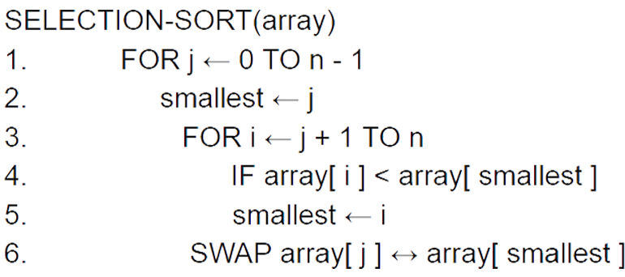
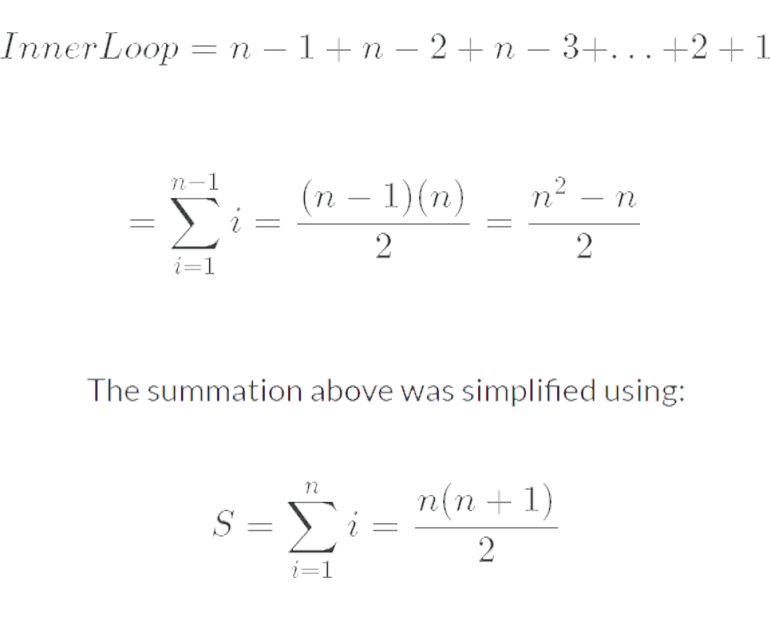
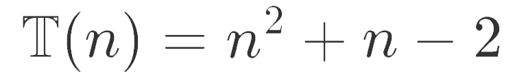
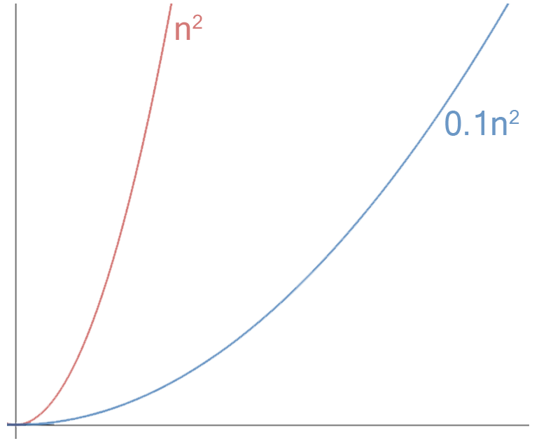
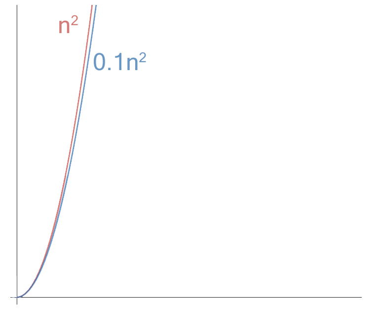
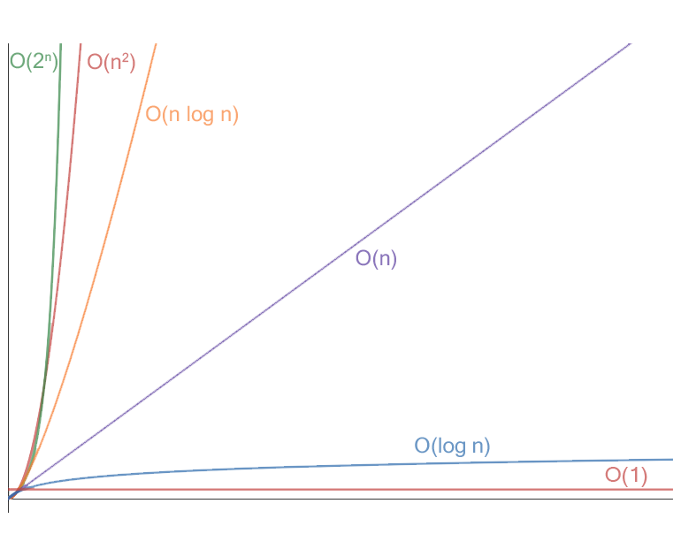

JM

Time Complexity and Big-O Notation
JM
How long does it take to sort 10 numbers into ascending order? What if we have 20 numbers? Or perhaps 1337 numbers? Time complexity is an important aspect of computer science as it allows us to analyse different algorithms to see how much time it will take as the size of the input grows. Faster solutions are desirable as they require less computational power and can save money for companies, especially when working with large data sets.
Time complexity can be expressed as ùïã(n) which describes the time that an algorithm will take when run on an input of size n. Obviously it doesn‚Äôt take as long to sort a list of numbers that are nearly sorted compared to a list of numbers that are all over the place. Time complexity focuses on the worst case scenario - which in a list of numbers would be that they are in reverse order and require the maximum amount of operations to sort them - as this means that it‚Äôs guaranteed that it will not take longer than this for any input.
To analyse an algorithm's time complexity we need to look at the number of operations that must be performed for an input of size n. A simple example of this would be to analyse the time complexity of selection sort which is a basic sorting algorithm.
The code below is written in pseudocode.
Considering the worst case scenario the outer FOR loop is executed n - 1 times and performs 2 operations - the first assignment and the swap - giving us 2n - 2, as 2(n-1) = 2n - 2. We must also consider the inner loop which initially runs n - 1 times, then n - 2 times and so on. This sequence can be expressed mathematically as:
This summation must be multiplied by 2 as in the worst case scenario the IF statement is always met and one comparison is executed as is one assignment. This gives us n2 - n operations which must be added to the 2n - 2 operations from the outer loop.
Thus, we can form the equation:
As we can see, this equation for the Time Complexity is a quadratic. To see how the time increases as the size of the input grows we can just consider the dominant term as it the only term that really matters - the other terms start to become less relevant. We can now approximate Time Complexity as:
If we look at another sorting algorithm with, for example, time complexity:

It may seem that this algorithm is much more efficient and if we look at it microscopically, we can see from the graph below that it looks like it is.
If we consider the graphs as the input size becomes very large and look macroscopically (see the graph below) we can actually see that the two graphs eventually look similar and this is why we can ignore constants and only consider the dominant term.
This is pretty much the basis of Big-O notation which just focuses on the fastest growing term. For example the selection sort algorithm and the other example algorithm would be:
In the graph below I have plotted some of the most common Big-O running times: exponential time (2n), quadratic time (n2), quasilinear time (n log n), linear time (n), logarithmic time (log n) and constant time (1). There are other worse running times such as factorial time (n!) and double exponential time (22n).
Big O is important as it allows us to analyse algorithms to see how they perform with large inputs. This was just a basic overview of Big-O notation, so if you want to read more on the topic you can here.